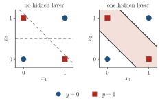
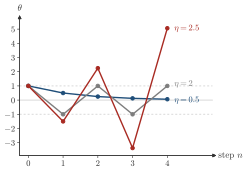

Page 1 of 9 of this session
10.1 Machine learning and many-body physics in two directions
In which two directions does machine learning meet the many-body physics of the course, and what does it mean to train a network? The session goes in these two directions, and it is useful to know which one we are following at each point. We arrive at the loss and the gradient descent of (10.1), the one template of the session, where each use of a network is a choice of input, output and loss.
In one direction, we use machine-learning architectures, mostly neural networks, to solve many-body problems. Examples are to represent wavefunctions that are too large to store, to reconstruct states from measurements, to classify phases of matter and to learn Hamiltonians from experimental observables. In the other direction, we use many-body architectures, in particular tensor networks, as machine-learning tools, and we apply them to ordinary tasks such as image classification.
Under both directions there is a third theme, which is probably the most important one in practice. This is to combine machine learning with the condensed-matter methods that we already have, such as density functional theory, phase classification and the extraction of Hamiltonians. Together they solve problems that are hard for each of the two approaches alone. We start with neural networks and how they learn, and then we see neural network quantum states and tomography in Section 10.3. Then come tensor networks used as machine learning in Section 10.4 and machine learning inside density functional theory in Section 10.5. At the end we see phase classification in Section 10.6 and Hamiltonian learning in Section 10.7.
10.2 Neural networks as function approximators
Machine learning is a large field, and we should say clearly which part of it we use in this session. There are three broad types of task. Supervised learning maps labeled inputs to outputs, and the standard example is image classification. This is the type that we will use in the rest of the session. Generative learning models a probability distribution directly, so that one can sample new instances from it. For instance, a generative adversarial network that is trained on photographs of cats can produce realistic images of cats that never existed. Reinforcement learning trains an agent to choose the actions that maximize a cumulative reward, given the state of its environment.
In this session we will not develop generative or reinforcement learning further, even though both of them have real uses in other parts of quantum materials. We keep the GAN example with cat faces in mind only to remember that supervised learning is not the whole field, even if it is all that we use in this session.
We can think of a deep neural network as a very flexible function with parameters. It takes an input, which is an array of numbers, passes it through a sequence of layers, and gives an output, which is another array of numbers. Inside a layer, the value of each node is a nonlinear function of the values of all the nodes in the previous layer, combined with a set of free parameters. These parameters are the weights, one for each connection, and the biases, one for each node. The architecture, which is the number and the width of the layers, fixes how complex a function the network can represent. The specific values of the weights and biases, which we call together \(\theta\), fix which function it does represent at a given moment.
To train a network means to search over \(\theta\) for the values that make the network give the function that we want. In practice, we define a loss function \(\mathcal{L}(\theta)\) that measures how far the output of the network is from the desired one, and we minimize it. This is usually done with backpropagation, which is an efficient and exact way to compute \(\partial \mathcal{L}/\partial\theta\) with the chain rule, together with gradient descent.
The loss of a network and the step of gradient descent are
\[\mathcal{L}(\theta) = \sum_n \left\| f_\theta(x_n) - y_n \right\|^2, \qquad \theta \;\longrightarrow\; \theta - \eta\, \nabla_\theta \mathcal{L}(\theta), \tag{10.1}\]
where \(\{(x_n, y_n)\}\) is a set of labeled training examples and \(\eta\) is the learning rate. Every use of a network in this session is a choice of the input \(x_n\), the output \(f_\theta(x_n)\) with its label \(y_n\) when there is one, and the loss. The training is always gradient descent, in its simplest form the update above with the learning rate \(\eta\).
The steps From the squared loss to its gradient by the chain rule
The simplest case is one neuron and one example \((x,y)\). The neuron gives \(f=\tanh(wx+b)\), and the loss of (10.1) is \(\mathcal L=(f-y)^2\). The chain rule goes from the loss to \(f\), and from \(f\) to \(w\),
\[\frac{\partial\mathcal L}{\partial w}=2(f-y)\,\frac{\partial f}{\partial w}=2(f-y)(1-f^2)\,x,\]
since the derivative of \(\tanh z\) is \(1-\tanh^2 z\). The derivative with respect to the bias \(b\) is the same without the factor \(x\).
Then we take one hidden layer of \(H\) neurons, with the values \(a_j=\tanh(w_jx+b_j)\), and a linear output \(f=\sum_j v_ja_j+c\). We call \(\delta=2(f-y)\) the derivative of the loss with respect to the output. The weights of the output layer give
\[\frac{\partial\mathcal L}{\partial v_j}=\delta\,a_j,\]
and for the layer before it we use the same \(\delta\) again,
\[\frac{\partial\mathcal L}{\partial w_j}=\delta_j\,x,\qquad \frac{\partial\mathcal L}{\partial b_j}=\delta_j,\qquad \delta_j=\delta\,v_j\,(1-a_j^2).\]
The derivative of the output layer is computed once and passed back to the layer before it, and with more layers it is passed back again, layer after layer. This is what backpropagation means. With many examples the loss (10.1) is a sum, so its gradient is the sum of the gradients of the examples.
The last step is to see why a small step lowers the loss. To first order in \(\eta\),
\[\mathcal L(\theta-\eta\nabla\mathcal L)\approx\mathcal L(\theta)-\eta\,|\nabla\mathcal L|^2,\]
and the second term is negative for \(\eta>0\) and \(\nabla\mathcal L\neq0\). So a small enough step always lowers the loss, while a large step can raise it, as the problem of this page shows.
Every use of a neural network in this session is a variation of (10.1), even when the physics attached to it is exotic. We have to choose the right input, the right output and the right loss, and then the training procedure is always the same gradient descent.
A network \(f_\theta\) is trained with the loss and the update
\[\mathcal{L}(\theta) = \sum_n \left\| f_\theta(x_n) - y_n \right\|^2, \qquad \theta \;\longrightarrow\; \theta - \eta\, \nabla_\theta \mathcal{L}(\theta).\]
Here \(\theta\) is the set of weights and biases, and \(\eta\) is the learning rate. We add a hidden layer to a network that has none. Which statement is correct?
Show the answers
- A. ✗ False
This is false. A network with no hidden layer is linear and cannot represent XOR. One hidden layer can, so adding a layer changes the set of functions.
- B. ✓ True
This is true. A linear network cannot represent XOR, and a network with one hidden layer can. The architecture sets the set of functions, and \(\theta\) chooses one inside it.

The four inputs \((x_1,x_2)\) of XOR, with the label \(y=0\) as circles and \(y=1\) as squares. No straight line separates the two classes, and the two dashed lines on the left are two tries that fail. One hidden layer with two neurons gives the two lines \(x_1+x_2=1/2\) and \(x_1+x_2=3/2\), and it selects the band between them, on the right. - C. ✗ False
This is false. The same Ising snapshots can be fitted with two layers or with ten. The number of layers is our choice, and gradient descent changes only \(\theta\).
In the update \(\theta\to\theta-\eta\nabla_\theta\mathcal{L}\) the learning rate \(\eta\) is made much too large. What do we expect?
Show the answers
- A. ✗ False
This is false. Take \(\mathcal L=\theta^2/2\), so the update is \(\theta\to(1-\eta)\theta\). For \(\eta=1\) the minimum is reached in one step, and for \(\eta=2.5\) the factor is \(-1.5\), which diverges.
- B. ✓ True
This is true. For \(\mathcal L=\theta^2/2\) with \(\eta=2.5\) we get \(\theta\to-1.5\theta\), so the loss grows by \(2.25\) at every step. For \(\eta=2\) the point oscillates between \(\pm\theta\).

The update \(\theta\to(1-\eta)\theta\) from \(\theta=1\), for four steps. For \(\eta=0.5\) the points fall toward zero and halve at every step, for \(\eta=2\) they jump between \(\pm1\), and for \(\eta=2.5\) they grow in size by the factor \(1.5\) at every step and change sign. - C. ✗ False
This is false. For \(\mathcal L=\theta^2/2\) the gradient is \(\theta\). A large \(\eta\) makes \(|\theta|\) larger, so the gradient grows and does not vanish until \(\theta=0\).
The concrete example that we keep in mind is the classification of images of cats and dogs, since we will use the same architecture two more times in this session. An image is an \(N\times N\) matrix of pixel values. We flatten it into the input layer of the network. The output layer has only two nodes, with the target \((1,0)\) for a cat and \((0,1)\) for a dog. We train on a labeled set of images by minimizing (10.1), with \(f_\theta\) the output of the network and \(y_n\) the one-hot label. Once the network is trained, it classifies new images that have no label.
This template can be used in many cases, since nothing in it depends on the input being a photograph. It only needs the input to be an array of numbers with a categorical label. We will see the same structure, an input matrix and a one-hot output, again in Section 10.6, where a spin configuration takes the place of the photograph. Figure 10.1 shows the template once, and the four later constructions of this session use it without change except for the choice of input, output and loss.

A network with one hidden layer of \(H\) neurons gives the function
\[f(x)=\sum_{j=1}^{H}v_j\tanh(w_jx+b_j)+c.\]
Here \(w_j\) and \(v_j\) are weights, and \(b_j\) and \(c\) are biases. It is fitted to \(y=\sin(3\pi x)\), the dashed line, on \(-1\le x\le 1\). Which fit has \(H=1\)?
Show the answers
- A. ✗ False
This is false. This curve has a maximum and a minimum, and one neuron cannot give them. It is the fit with \(H=3\), and in the training run that is drawn its mean squared error on the training points is \(0.23\).
- B. ✓ True
This is true. For \(H=1\) the network is \(f(x)=v\tanh(wx+b)+c\), which is monotonic in \(x\), so the curve has no extremum. In the training run that is drawn its mean squared error is \(0.46\), close to the \(0.49\) of an output that is zero.
- C. ✗ False
This is false. This curve follows all six extrema of the target, with a mean squared error of \(2.3\times10^{-4}\) in the training run that is drawn. It is the fit with \(H=12\), which has \(37\) parameters.
The architecture fixes which functions the network can represent. One neuron gives a monotonic function for every choice of \(v\), \(w\), \(b\) and \(c\), and the training cannot change this. So the answer holds for every training run, while the error quoted for each fit belongs to the one run that is drawn.
We run gradient descent (10.1) on the loss \(\mathcal L=a\theta^2/2\) of one parameter \(\theta\), with the curvature \(a>0\), from \(\theta_0\). Show that after \(n\) steps \(\theta_n=(1-\eta a)^n\theta_0\). For which learning rates \(\eta\) does \(\theta_n\) go to the minimum, and which \(\eta\) reaches it in one step? Give the numbers for \(a=4\).
Solution
The gradient is \(\partial\mathcal L/\partial\theta=a\theta\), so one step of (10.1) gives
\[\theta\;\longrightarrow\;\theta-\eta a\theta=(1-\eta a)\,\theta,\]
and after \(n\) steps \(\theta_n=(1-\eta a)^n\theta_0\). This goes to zero only when \(|1-\eta a|<1\), meaning that
\[0<\eta<\frac{2}{a}.\]
For \(\eta=1/a\) the factor is zero, and the first step lands on the minimum. For \(1/a<\eta<2/a\) the factor is negative, so \(\theta_n\) changes sign at every step and still goes to zero. For \(\eta>2/a\) it grows in size at every step and changes sign, which is the divergence of a learning rate that is too large.
For \(a=4\) the limit is \(\eta=0.5\), and one step is enough at \(\eta=0.25\). At \(\eta=0.5\) the factor is \(-1\), so \(\theta\) jumps between \(\theta_0\) and \(-\theta_0\). At \(\eta=0.6\) the factor is \(-1.4\), so \(|\theta|\) grows by the factor \(1.4\) at every step.
With many parameters the loss near a minimum is, to second order, a sum of such terms, one for each principal direction of the matrix of second derivatives, with its own curvature \(a_i\). The same \(\eta\) has to work for all of them, so the most curved direction, with the largest \(a_i\), sets the largest learning rate \(2/a_{\max}\). When the smallest curvature is much smaller than the largest one, the flat directions then shrink only by the factor \(1-\eta a_i\), close to one, at every step, and the training is slow along them.
- In Section 10.3 the loss of (10.1) becomes the variational energy, and the network becomes a wavefunction.
- In Section 10.6 the cat-and-dog classifier is trained on spin snapshots, with a one-hot label for the phase.
- In Section 10.7 the same squared loss, with the parameters of a Hamiltonian as the label, learns the Hamiltonian from an observable.